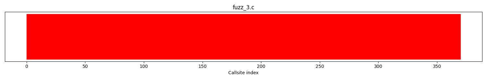
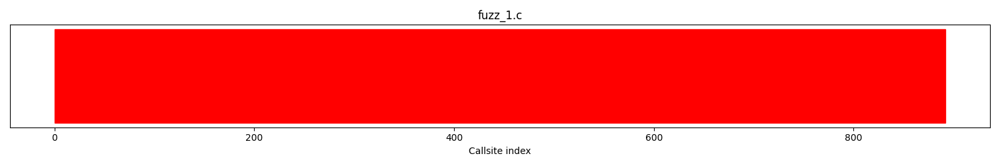
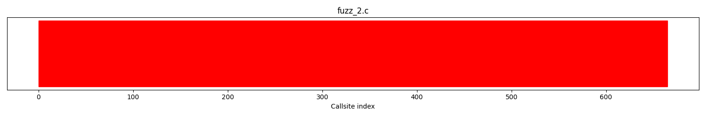
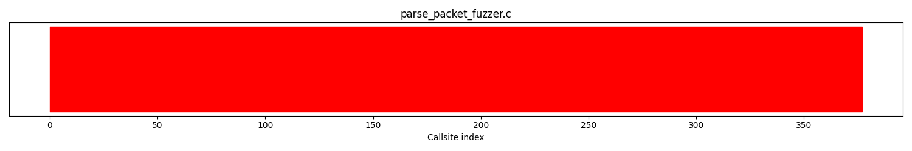
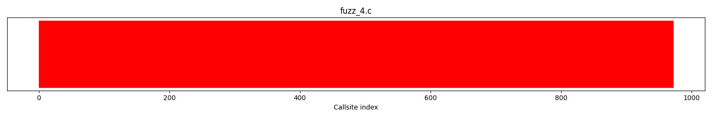

The following table shows data about each function in the project. The functions included in this table correspond to all functions that exist in the executables of the fuzzers. As such, there may be functions that are from third-party libraries.
For further technical details on the meaning of columns in the below table, please see the Glossary .
| Func name | Functions filename | Args | Function call depth | Reached by Fuzzers | Runtime reached by Fuzzers | Combined reached by Fuzzers | Fuzzers runtime hit | Func lines hit % | I Count | BB Count | Cyclomatic complexity | Functions reached | Reached by functions | Accumulated cyclomatic complexity | Undiscovered complexity |
|---|
The calltree shows the control flow of the fuzzer. This is overlaid with coverage information to display how much of the potential code a fuzzer can reach is in fact covered at runtime. In the following there is a link to a detailed calltree visualisation as well as a bitmap showing a high-level view of the calltree. For further information about these topics please see the glossary for full calltree and calltree overview
Call tree overview bitmap:

The project has no code coverage. Will not display blockers as blockers depend on code coverage.
The calltree shows the control flow of the fuzzer. This is overlaid with coverage information to display how much of the potential code a fuzzer can reach is in fact covered at runtime. In the following there is a link to a detailed calltree visualisation as well as a bitmap showing a high-level view of the calltree. For further information about these topics please see the glossary for full calltree and calltree overview
Call tree overview bitmap:

The project has no code coverage. Will not display blockers as blockers depend on code coverage.
The calltree shows the control flow of the fuzzer. This is overlaid with coverage information to display how much of the potential code a fuzzer can reach is in fact covered at runtime. In the following there is a link to a detailed calltree visualisation as well as a bitmap showing a high-level view of the calltree. For further information about these topics please see the glossary for full calltree and calltree overview
Call tree overview bitmap:

The project has no code coverage. Will not display blockers as blockers depend on code coverage.
The calltree shows the control flow of the fuzzer. This is overlaid with coverage information to display how much of the potential code a fuzzer can reach is in fact covered at runtime. In the following there is a link to a detailed calltree visualisation as well as a bitmap showing a high-level view of the calltree. For further information about these topics please see the glossary for full calltree and calltree overview
Call tree overview bitmap:

The project has no code coverage. Will not display blockers as blockers depend on code coverage.
The calltree shows the control flow of the fuzzer. This is overlaid with coverage information to display how much of the potential code a fuzzer can reach is in fact covered at runtime. In the following there is a link to a detailed calltree visualisation as well as a bitmap showing a high-level view of the calltree. For further information about these topics please see the glossary for full calltree and calltree overview
Call tree overview bitmap:

The project has no code coverage. Will not display blockers as blockers depend on code coverage.
The following table shows a list of functions that are optimal targets. Optimal targets are identified by finding the functions that in combination, yield a high code coverage.
| Func name | Functions filename | Arg count | Args | Function depth | hitcount | instr count | bb count | cyclomatic complexity | Reachable functions | Incoming references | total cyclomatic complexity | Unreached complexity |
|---|---|---|---|---|---|---|---|---|---|---|---|---|
handle_req
|
/src/unbound/daemon/remote.c | 3 | ['struct daemon_remote*', 'struct rc_state*', 'RES*'] | 23 | 0 | 41 | 10 | 14 | 1475 | 0 | 6047 | 4380 |
iter_operate
|
/src/unbound/iterator/iterator.c | 4 | ['struct module_qstate*', 'enum module_ev', 'int', 'struct outbound_entry*'] | 25 | 0 | 33 | 8 | 12 | 940 | 0 | 4455 | 2175 |
run_daemon
|
/src/unbound/daemon/unbound.c | 4 | ['char*', 'int', 'int', 'int'] | 20 | 0 | 39 | 12 | 12 | 1379 | 0 | 4970 | 1261 |
val_operate
|
/src/unbound/validator/validator.c | 4 | ['struct module_qstate*', 'enum module_ev', 'int', 'struct outbound_entry*'] | 22 | 0 | 59 | 14 | 16 | 657 | 0 | 2540 | 731 |
run_scenario
|
/src/unbound/testcode/fake_event.c | 1 | ['struct replay_runtime*'] | 18 | 0 | 37 | 8 | 11 | 458 | 0 | 1535 | 538 |
do_root_update_work
|
/src/unbound/smallapp/unbound-anchor.c | 16 | ['char*', 'char*', 'char*', 'char*', 'char*', 'char*', 'char*', 'char*', 'char*', 'char*', 'int', 'int', 'int', 'int', 'int', 'int'] | 26 | 0 | 32 | 11 | 17 | 1354 | 1 | 5430 | 489 |
service_tcp_listen
|
/src/unbound/testcode/delayer.c | 8 | ['int', 'fd_set*', 'int*', 'struct tcp_proxy**', 'struct sockaddr_storage*', 'socklen_t', 'struct timeval*', 'struct timeval*'] | 13 | 0 | 365 | 84 | 121 | 196 | 3 | 752 | 413 |
Implementing fuzzers that target the above functions will improve reachability such that it becomes:
If you implement fuzzers for these functions, the status of all functions in the project will be:
| Func name | Functions filename | Args | Function call depth | Reached by Fuzzers | Runtime reached by Fuzzers | Combined reached by Fuzzers | Fuzzers runtime hit | Func lines hit % | I Count | BB Count | Cyclomatic complexity | Functions reached | Reached by functions | Accumulated cyclomatic complexity | Undiscovered complexity |
|---|
This sections provides heuristics that can be used as input to a fuzz engine when running a given fuzz target. The current focus is on providing input that is usable by libFuzzer.
Use this with the libFuzzer -dict=DICT.file flag
Use this with the libFuzzer -dict=DICT.file flag
Use this with the libFuzzer -dict=DICT.file flag
Use this with the libFuzzer -dict=DICT.file flag
Use this with the libFuzzer -dict=DICT.file flag
The below fuzzers are templates and suggestions for how to target the set of optimal functions above
#include "ada_fuzz_header.h"
int LLVMFuzzerTestOneInput(const uint8_t *data, size_t size) {
af_safe_gb_init(data, size);
/* target handle_req */
structdaemon_remote* new_var0 = calloc(sizeof(structdaemon_remote), 1);
structrc_state* new_var1 = calloc(sizeof(structrc_state), 1);
UNKNOWN_TYPE unknown_2;
handle_req(new_var0, new_var1, unknown_2);
af_safe_gb_cleanup();
}
#include "ada_fuzz_header.h"
int LLVMFuzzerTestOneInput(const uint8_t *data, size_t size) {
af_safe_gb_init(data, size);
/* target iter_operate */
structmodule_qstate* new_var3 = calloc(sizeof(structmodule_qstate), 1);
UNKNOWN_TYPE unknown_4;
int new_var5 = ada_safe_get_int();
structoutbound_entry* new_var6 = calloc(sizeof(structoutbound_entry), 1);
iter_operate(new_var3, unknown_4, new_var5, new_var6);
af_safe_gb_cleanup();
}
#include "ada_fuzz_header.h"
int LLVMFuzzerTestOneInput(const uint8_t *data, size_t size) {
af_safe_gb_init(data, size);
/* target run_daemon */
char *new_var7 = ada_safe_get_char_p();
int new_var8 = ada_safe_get_int();
int new_var9 = ada_safe_get_int();
int new_var10 = ada_safe_get_int();
run_daemon(new_var7, new_var8, new_var9, new_var10);
af_safe_gb_cleanup();
}
#include "ada_fuzz_header.h"
int LLVMFuzzerTestOneInput(const uint8_t *data, size_t size) {
af_safe_gb_init(data, size);
/* target val_operate */
structmodule_qstate* new_var11 = calloc(sizeof(structmodule_qstate), 1);
UNKNOWN_TYPE unknown_12;
int new_var13 = ada_safe_get_int();
structoutbound_entry* new_var14 = calloc(sizeof(structoutbound_entry), 1);
val_operate(new_var11, unknown_12, new_var13, new_var14);
af_safe_gb_cleanup();
}
#include "ada_fuzz_header.h"
int LLVMFuzzerTestOneInput(const uint8_t *data, size_t size) {
af_safe_gb_init(data, size);
/* target run_scenario */
structreplay_runtime* new_var15 = calloc(sizeof(structreplay_runtime), 1);
run_scenario(new_var15);
af_safe_gb_cleanup();
}
#include "ada_fuzz_header.h"
int LLVMFuzzerTestOneInput(const uint8_t *data, size_t size) {
af_safe_gb_init(data, size);
/* target do_root_update_work */
char *new_var16 = ada_safe_get_char_p();
char *new_var17 = ada_safe_get_char_p();
char *new_var18 = ada_safe_get_char_p();
char *new_var19 = ada_safe_get_char_p();
char *new_var20 = ada_safe_get_char_p();
char *new_var21 = ada_safe_get_char_p();
char *new_var22 = ada_safe_get_char_p();
char *new_var23 = ada_safe_get_char_p();
char *new_var24 = ada_safe_get_char_p();
char *new_var25 = ada_safe_get_char_p();
int new_var26 = ada_safe_get_int();
int new_var27 = ada_safe_get_int();
int new_var28 = ada_safe_get_int();
int new_var29 = ada_safe_get_int();
int new_var30 = ada_safe_get_int();
int new_var31 = ada_safe_get_int();
do_root_update_work(new_var16, new_var17, new_var18, new_var19, new_var20, new_var21, new_var22, new_var23, new_var24, new_var25, new_var26, new_var27, new_var28, new_var29, new_var30, new_var31);
af_safe_gb_cleanup();
}
#include "ada_fuzz_header.h"
int LLVMFuzzerTestOneInput(const uint8_t *data, size_t size) {
af_safe_gb_init(data, size);
/* target service_tcp_listen */
int new_var32 = ada_safe_get_int();
UNKNOWN_TYPE unknown_33;
int *new_var34 = af_get_int_p();
UNKNOWN_TYPE unknown_35;
structsockaddr_storage* new_var36 = calloc(sizeof(structsockaddr_storage), 1);
UNKNOWN_TYPE unknown_37;
structtimeval* new_var38 = calloc(sizeof(structtimeval), 1);
structtimeval* new_var39 = calloc(sizeof(structtimeval), 1);
service_tcp_listen(new_var32, unknown_33, new_var34, unknown_35, new_var36, unknown_37, new_var38, new_var39);
af_safe_gb_cleanup();
}
This section shows which files and directories are considered in this report. The main reason for showing this is fuzz introspector may include more code in the reasoning than is desired. This section helps identify if too many files/directories are included, e.g. third party code, which may be irrelevant for the threat model. In the event too much is included, fuzz introspector supports a configuration file that can exclude data from the report. See the following link for more information on how to create a config file: link
| Source file | Reached by | Covered by |
|---|---|---|
| /src/unbound/sldns/parseutil.c | ['fuzz_3.c', 'fuzz_2.c'] | [] |
| /src/unbound/util/config_file.c | [] | [] |
| /src/unbound/services/outbound_list.c | [] | [] |
| /src/unbound/validator/val_secalgo.c | [] | [] |
| /src/unbound/util/siphash.c | [] | [] |
| /src/unbound/dynlibmod/dynlibmod.c | [] | [] |
| /src/unbound/compat/memcmp.c | [] | [] |
| /src/unbound/iterator/iter_priv.c | ['fuzz_1.c', 'fuzz_4.c'] | [] |
| /src/unbound/validator/val_nsec3.c | [] | [] |
| /src/unbound/util/rfc_1982.c | [] | [] |
| /src/unbound/compat/reallocarray.c | [] | [] |
| /src/unbound/compat/inet_ntop.c | ['fuzz_1.c', 'fuzz_2.c', 'fuzz_4.c'] | [] |
| /src/unbound/daemon/stats.c | [] | [] |
| /src/unbound/testcode/unitzonemd.c | [] | [] |
| /src/unbound/testcode/delayer.c | [] | [] |
| /src/unbound/sldns/wire2str.c | ['fuzz_2.c'] | [] |
| /src/unbound/compat/snprintf.c | ['fuzz_1.c', 'fuzz_2.c', 'parse_packet_fuzzer.c', 'fuzz_4.c'] | [] |
| /src/unbound/compat/inet_aton.c | [] | [] |
| /src/unbound/daemon/remote.c | ['fuzz_1.c', 'fuzz_4.c'] | [] |
| /src/unbound/testcode/unitmsgparse.c | [] | [] |
| /src/unbound/dnstap/unbound-dnstap-socket.c | [] | [] |
| /src/unbound/util/edns.c | [] | [] |
| /src/unbound/testcode/checklocks.c | ['fuzz_1.c', 'fuzz_4.c'] | [] |
| /src/unbound/util/data/dname.c | ['fuzz_1.c', 'parse_packet_fuzzer.c', 'fuzz_4.c'] | [] |
| /src/unbound/sldns/rrdef.c | ['fuzz_3.c', 'fuzz_2.c'] | [] |
| /src/unbound/iterator/iter_utils.c | [] | [] |
| /src/unbound/edns-subnet/subnetmod.c | [] | [] |
| /src/unbound/sldns/str2wire.h | [] | [] |
| /src/unbound/util/tube.c | [] | [] |
| /src/unbound/sldns/keyraw.c | ['fuzz_2.c'] | [] |
| /src/unbound/sldns/sbuffer.c | ['fuzz_3.c', 'fuzz_1.c', 'parse_packet_fuzzer.c', 'fuzz_4.c'] | [] |
| /src/unbound/util/net_help.h | [] | [] |
| /src/unbound/ipsecmod/ipsecmod.c | [] | [] |
| /src/unbound/compat/getentropy_linux.c | [] | [] |
| /src/unbound/parse_packet_fuzzer.c | ['parse_packet_fuzzer.c'] | [] |
| /src/unbound/libunbound/libworker.c | [] | [] |
| /src/unbound/util/data/msgparse.c | ['fuzz_1.c', 'parse_packet_fuzzer.c', 'fuzz_4.c'] | [] |
| /src/unbound/sldns/sbuffer.h | ['fuzz_3.c', 'fuzz_1.c', 'fuzz_2.c', 'parse_packet_fuzzer.c', 'fuzz_4.c'] | [] |
| /src/unbound/compat/gmtime_r.c | ['fuzz_2.c'] | [] |
| /src/unbound/util/data/msgreply.c | ['fuzz_1.c', 'fuzz_4.c'] | [] |
| /src/unbound/testcode/replay.c | ['fuzz_4.c'] | [] |
| /src/unbound/validator/val_kentry.c | [] | [] |
| /src/unbound/services/modstack.c | [] | [] |
| /src/unbound/compat/ctime_r.c | [] | [] |
| /src/unbound/util/data/packed_rrset.c | ['fuzz_1.c', 'fuzz_4.c'] | [] |
| /src/unbound/daemon/worker.c | [] | [] |
| /src/unbound/services/cache/rrset.c | ['fuzz_1.c', 'fuzz_4.c'] | [] |
| /src/unbound/daemon/unbound.c | [] | [] |
| /src/unbound/testcode/streamtcp.c | [] | [] |
| /src/unbound/compat/malloc.c | [] | [] |
| /src/unbound/testcode/unitlruhash.c | [] | [] |
| /src/unbound/services/mesh.c | [] | [] |
| /src/unbound/validator/val_utils.c | [] | [] |
| /src/unbound/compat/strsep.c | [] | [] |
| /src/unbound/validator/autotrust.c | [] | [] |
| /src/unbound/dnstap/dtstream.c | [] | [] |
| /src/unbound/compat/chacha_private.h | [] | [] |
| /src/unbound/testcode/unittcpreuse.c | [] | [] |
| /src/unbound/compat/strlcpy.c | [] | [] |
| /src/unbound/compat/getentropy_solaris.c | [] | [] |
| /src/unbound/util/regional.c | ['fuzz_1.c', 'parse_packet_fuzzer.c', 'fuzz_4.c'] | [] |
| /src/unbound/util/shm_side/shm_main.c | [] | [] |
| /src/unbound/iterator/iter_fwd.c | [] | [] |
| /src/unbound/sldns/parse.c | ['fuzz_3.c'] | [] |
| /src/unbound/compat/fake-rfc2553.c | [] | [] |
| /src/unbound/edns-subnet/edns-subnet.c | [] | [] |
| /src/unbound/util/storage/dnstree.c | ['fuzz_1.c', 'fuzz_4.c'] | [] |
| /src/unbound/testcode/unitanchor.c | [] | [] |
| /src/unbound/util/ub_event_pluggable.c | [] | [] |
| /src/unbound/util/timehist.c | [] | [] |
| /src/unbound/daemon/acl_list.c | [] | [] |
| /src/unbound/testcode/unitecs.c | [] | [] |
| /src/unbound/services/localzone.c | [] | [] |
| /src/unbound/validator/val_anchor.c | [] | [] |
| /src/unbound/testcode/unitmain.h | [] | [] |
| /src/unbound/cachedb/redis.c | [] | [] |
| /src/unbound/util/log.c | ['fuzz_1.c', 'parse_packet_fuzzer.c', 'fuzz_4.c'] | [] |
| /src/unbound/util/locks.c | [] | [] |
| /src/unbound/compat/sha512.c | [] | [] |
| /src/unbound/services/rpz.c | [] | [] |
| /src/unbound/util/random.c | [] | [] |
| /src/unbound/util/locks.h | [] | [] |
| /src/unbound/util/fptr_wlist.h | [] | [] |
| /src/unbound/edns-subnet/subnet-whitelist.c | [] | [] |
| /src/unbound/util/storage/lruhash.c | ['fuzz_1.c', 'fuzz_4.c'] | [] |
| /src/unbound/testcode/unitauth.c | [] | [] |
| /src/unbound/cachedb/cachedb.c | [] | [] |
| /src/unbound/services/cache/infra.c | [] | [] |
| /src/unbound/libunbound/libunbound.c | [] | [] |
| /src/unbound/smallapp/unbound-control.c | [] | [] |
| /src/unbound/util/alloc.h | [] | [] |
| /src/unbound/util/proxy_protocol.c | [] | [] |
| /src/unbound/dns64/dns64.c | [] | [] |
| /src/unbound/util/timeval_func.h | [] | [] |
| /src/unbound/testcode/signit.c | ['fuzz_1.c', 'fuzz_4.c'] | [] |
| /src/unbound/testcode/lock_verify.c | [] | [] |
| /src/unbound/util/data/msgencode.c | [] | [] |
| /src/unbound/util/netevent.c | [] | [] |
| /src/unbound/compat/isblank.c | [] | [] |
| /src/unbound/testcode/unitldns.c | [] | [] |
| /src/unbound/util/alloc.c | ['fuzz_1.c', 'fuzz_4.c'] | [] |
| /src/unbound/dnscrypt/dnscrypt.c | ['fuzz_1.c', 'fuzz_4.c'] | [] |
| /src/unbound/daemon/daemon.c | [] | [] |
| /src/unbound/testcode/testbound.c | [] | [] |
| /src/unbound/winrc/w_inst.c | [] | [] |
| /src/unbound/util/winsock_event.h | [] | [] |
| /src/unbound/testcode/unitslabhash.c | [] | [] |
| /src/unbound/validator/validator.c | [] | [] |
| /src/unbound/util/data/msgparse.h | [] | [] |
| /src/unbound/services/view.c | [] | [] |
| /src/unbound/daemon/cachedump.c | [] | [] |
| /src/unbound/util/log.h | [] | [] |
| /src/unbound/testcode/unitregional.c | [] | [] |
| /src/unbound/testcode/unitmain.c | [] | [] |
| /src/unbound/fuzz_4.c | ['fuzz_4.c'] | [] |
| /src/unbound/ipset/ipset.c | [] | [] |
| /src/unbound/compat/strlcat.c | [] | [] |
| /src/unbound/smallapp/unbound-host.c | [] | [] |
| /src/unbound/ipsecmod/ipsecmod-whitelist.c | [] | [] |
| /src/unbound/util/ub_event.c | [] | [] |
| /src/unbound/services/outside_network.c | [] | [] |
| /src/unbound/util/data/msgreply.h | [] | [] |
| /src/unbound/iterator/iterator.c | [] | [] |
| /src/unbound/fuzz_1.c | ['fuzz_1.c'] | [] |
| /src/unbound/testcode/memstats.c | [] | [] |
| /src/unbound/validator/val_sigcrypt.c | [] | [] |
| /src/unbound/dynlibmod/examples/helloworld.c | [] | [] |
| /src/unbound/testcode/unitverify.c | [] | [] |
| /src/unbound/iterator/iter_resptype.c | [] | [] |
| /src/unbound/util/storage/slabhash.c | ['fuzz_1.c', 'fuzz_4.c'] | [] |
| /src/unbound/validator/val_neg.c | [] | [] |
| /src/unbound/compat/getentropy_win.c | [] | [] |
| /src/unbound/util/storage/lookup3.c | ['fuzz_1.c', 'parse_packet_fuzzer.c', 'fuzz_4.c'] | [] |
| /src/unbound/validator/val_nsec.c | [] | [] |
| /src/unbound/edns-subnet/addrtree.c | [] | [] |
| /src/unbound/compat/fake-rfc2553.h | [] | [] |
| /src/unbound/respip/respip.c | ['fuzz_1.c', 'parse_packet_fuzzer.c', 'fuzz_4.c'] | [] |
| /src/unbound/util/winsock_event.c | [] | [] |
| /src/unbound/compat/arc4random.c | [] | [] |
| /src/unbound/iterator/iter_hints.c | [] | [] |
| /src/unbound/libunbound/context.c | [] | [] |
| /src/unbound/services/cache/dns.c | [] | [] |
| /src/unbound/util/module.c | ['fuzz_1.c', 'fuzz_4.c'] | [] |
| /src/unbound/fuzz_3.c | ['fuzz_3.c'] | [] |
| /src/unbound/winrc/win_svc.c | [] | [] |
| /src/unbound/util/fptr_wlist.c | [] | [] |
| /src/unbound/compat/arc4random_uniform.c | [] | [] |
| /src/unbound/util/tcp_conn_limit.c | [] | [] |
| /src/unbound/compat/strptime.c | [] | [] |
| /src/unbound/testcode/pktview.c | [] | [] |
| /src/unbound/testcode/perf.c | [] | [] |
| /src/unbound/pythonmod/pythonmod_utils.c | [] | [] |
| /src/unbound/smallapp/unbound-anchor.c | [] | [] |
| /src/unbound/testcode/unitneg.c | [] | [] |
| /src/unbound/testcode/petal.c | [] | [] |
| /src/unbound/iterator/iter_delegpt.c | [] | [] |
| /src/unbound/services/listen_dnsport.c | [] | [] |
| /src/unbound/winrc/anchor-update.c | [] | [] |
| /src/unbound/fuzz_2.c | ['fuzz_2.c'] | [] |
| /src/unbound/smallapp/unbound-checkconf.c | [] | [] |
| /src/unbound/util/rtt.c | [] | [] |
| /src/unbound/dnstap/dnstap.c | [] | [] |
| /src/unbound/sldns/pkthdr.h | [] | [] |
| /src/unbound/pythonmod/pythonmod.c | [] | [] |
| /src/unbound/compat/arc4_lock.c | [] | [] |
| /src/unbound/testcode/fake_event.c | ['fuzz_4.c'] | [] |
| /src/unbound/testcode/dohclient.c | [] | [] |
| /src/unbound/util/mini_event.c | [] | [] |
| /src/unbound/testcode/readhex.c | [] | [] |
| /src/unbound/compat/explicit_bzero.c | [] | [] |
| /src/unbound/util/timeval_func.c | [] | [] |
| /src/unbound/iterator/iter_donotq.c | [] | [] |
| /src/unbound/testcode/unitdname.c | [] | [] |
| /src/unbound/testcode/asynclook.c | [] | [] |
| /src/unbound/iterator/iter_scrub.c | ['fuzz_1.c', 'fuzz_4.c'] | [] |
| /src/unbound/testcode/readzone.c | [] | [] |
| /src/unbound/smallapp/worker_cb.c | [] | [] |
| /src/unbound/testcode/testpkts.c | [] | [] |
| /src/unbound/services/authzone.c | [] | [] |
| /src/unbound/util/rbtree.c | ['fuzz_1.c', 'fuzz_4.c'] | [] |
| /src/unbound/validator/val_kcache.c | [] | [] |
| /src/unbound/util/net_help.c | ['fuzz_1.c', 'fuzz_4.c'] | [] |
| /src/unbound/sldns/str2wire.c | ['fuzz_3.c'] | [] |
| /src/unbound/dnstap/dnstap_fstrm.c | [] | [] |
| /src/unbound/compat/memmove.c | ['fuzz_3.c', 'fuzz_1.c', 'fuzz_2.c', 'parse_packet_fuzzer.c', 'fuzz_4.c'] | [] |
| Directory |
|---|
| /src/unbound/ |
| /src/unbound/util/data/ |
| /src/unbound/compat/ |
| /src/unbound/edns-subnet/ |
| /src/unbound/ipset/ |
| /src/unbound/util/shm_side/ |
| /src/unbound/util/ |
| /src/unbound/validator/ |
| /src/unbound/dnscrypt/ |
| /src/unbound/dns64/ |
| /src/unbound/daemon/ |
| /src/unbound/respip/ |
| /src/unbound/cachedb/ |
| /src/unbound/dynlibmod/ |
| /src/unbound/winrc/ |
| /src/unbound/iterator/ |
| /src/unbound/libunbound/ |
| /src/unbound/pythonmod/ |
| /src/unbound/services/cache/ |
| /src/unbound/smallapp/ |
| /src/unbound/util/storage/ |
| /src/unbound/services/ |
| /src/unbound/testcode/ |
| /src/unbound/ipsecmod/ |
| /src/unbound/sldns/ |
| /src/unbound/dynlibmod/examples/ |
| /src/unbound/dnstap/ |
This section shows a list of 3rd party function calls and their relative coverage information. By static analysis of the target project code, all of the 3rd party function call and their caller information, including the source file and line number that initiate the call are captured. The caller source code file and line number are shown in column 2 while column 1 is the function name of the 3rd party function call. Each occurrent of the 3rd party function call will occuply a separate row. Column 3 of each row indicate if the 3rd party call in the source file line is unreachable. Column 4 lists all fuzzers that have covered that particular system call in that specific location (source file and line)during their dynamic fuzzing.
| Target sink | Callsite location | Reached by fuzzer | Covered by Fuzzers |
|---|
This sections shows the raw data that is used to produce this report. This is mainly used for further processing and developer debugging.
| Fuzzer | Calltree file | Program data file | Coverage file |
|---|---|---|---|
| fuzz_3.c | fuzzerLogFile-fuzz_3.data | fuzzerLogFile-fuzz_3.data.yaml | |
| fuzz_1.c | fuzzerLogFile-fuzz_1.data | fuzzerLogFile-fuzz_1.data.yaml | |
| fuzz_2.c | fuzzerLogFile-fuzz_2.data | fuzzerLogFile-fuzz_2.data.yaml | |
| parse_packet_fuzzer.c | fuzzerLogFile-parse_packet_fuzzer.data | fuzzerLogFile-parse_packet_fuzzer.data.yaml | |
| fuzz_4.c | fuzzerLogFile-fuzz_4.data | fuzzerLogFile-fuzz_4.data.yaml |
This section contains multiple tables, each table contains a list of sink functions/methods found in the project for one of the CWE supported by the sink analyser, together with information like which fuzzers statically reach the sink functions/methods and possible call path to that sink functions/methods if it is not statically reached by any fuzzers. Column 1 is the function/method name of the sink functions/methods found in the project. Column 2 lists all fuzzers (or no fuzzers at all) that have covered that particular function method statically. Column 3 shows a list of possible call paths to reach the specific function/method call if none of the fuzzers cover the target function/method calls. Lastly, column 4 shows possible fuzzer blockers that prevent an existing fuzzer from reaching the target sink functions/methods dynamically.
| Target sink | Reached by fuzzer | Function call path | Possible branch blockers | ||||||||||||||||||||||||||||||||||||||||||||||||||||||||||||||||||||||||||||||||||||||||||||||||||||||||||||||||||||||||||||||||||||||||||||||||||||||||||||||||||||||||||||||||||||||||||||||||||||||||||||||||||||||||||||||||||||||||||||||||||||||||||||||||||||||||||||||||||||||||||||||||||||||||||||||||||||||||||||||||||||||||||||||||||||||||||||||||||||||||||||||||||||||||||||||||||||||||||||||||||||||||||||||||||||||||||||||||||||||||||||||||||||||||||||||||||||||||||||||||||||||||||||||||||||||||||||||||||||||||||||||||||||||||||||||||||||||||||||||||||||||||||||||||||||||||||||||||||||||||||||||||||||||||||||||||||||||||||||||||||||||||||||||||||||||||||||||||||||||||||||||||||||||||||||||||||||||||||||||||||||||||||||||||||||||||||||||||||||||||||||||||||||||||||||||||||||||||||||||||||||||||||||||||||||||||||||||||||||||||||||||||||||||||||||||||||||||||||||||||||||||||||||||||||||||||||||||||||||||||||||||||||||||||||||||||||||||||||||||||||||||||||||||||||||||||||||||||||||
|---|---|---|---|---|---|---|---|---|---|---|---|---|---|---|---|---|---|---|---|---|---|---|---|---|---|---|---|---|---|---|---|---|---|---|---|---|---|---|---|---|---|---|---|---|---|---|---|---|---|---|---|---|---|---|---|---|---|---|---|---|---|---|---|---|---|---|---|---|---|---|---|---|---|---|---|---|---|---|---|---|---|---|---|---|---|---|---|---|---|---|---|---|---|---|---|---|---|---|---|---|---|---|---|---|---|---|---|---|---|---|---|---|---|---|---|---|---|---|---|---|---|---|---|---|---|---|---|---|---|---|---|---|---|---|---|---|---|---|---|---|---|---|---|---|---|---|---|---|---|---|---|---|---|---|---|---|---|---|---|---|---|---|---|---|---|---|---|---|---|---|---|---|---|---|---|---|---|---|---|---|---|---|---|---|---|---|---|---|---|---|---|---|---|---|---|---|---|---|---|---|---|---|---|---|---|---|---|---|---|---|---|---|---|---|---|---|---|---|---|---|---|---|---|---|---|---|---|---|---|---|---|---|---|---|---|---|---|---|---|---|---|---|---|---|---|---|---|---|---|---|---|---|---|---|---|---|---|---|---|---|---|---|---|---|---|---|---|---|---|---|---|---|---|---|---|---|---|---|---|---|---|---|---|---|---|---|---|---|---|---|---|---|---|---|---|---|---|---|---|---|---|---|---|---|---|---|---|---|---|---|---|---|---|---|---|---|---|---|---|---|---|---|---|---|---|---|---|---|---|---|---|---|---|---|---|---|---|---|---|---|---|---|---|---|---|---|---|---|---|---|---|---|---|---|---|---|---|---|---|---|---|---|---|---|---|---|---|---|---|---|---|---|---|---|---|---|---|---|---|---|---|---|---|---|---|---|---|---|---|---|---|---|---|---|---|---|---|---|---|---|---|---|---|---|---|---|---|---|---|---|---|---|---|---|---|---|---|---|---|---|---|---|---|---|---|---|---|---|---|---|---|---|---|---|---|---|---|---|---|---|---|---|---|---|---|---|---|---|---|---|---|---|---|---|---|---|---|---|---|---|---|---|---|---|---|---|---|---|---|---|---|---|---|---|---|---|---|---|---|---|---|---|---|---|---|---|---|---|---|---|---|---|---|---|---|---|---|---|---|---|---|---|---|---|---|---|---|---|---|---|---|---|---|---|---|---|---|---|---|---|---|---|---|---|---|---|---|---|---|---|---|---|---|---|---|---|---|---|---|---|---|---|---|---|---|---|---|---|---|---|---|---|---|---|---|---|---|---|---|---|---|---|---|---|---|---|---|---|---|---|---|---|---|---|---|---|---|---|---|---|---|---|---|---|---|---|---|---|---|---|---|---|---|---|---|---|---|---|---|---|---|---|---|---|---|---|---|---|---|---|---|---|---|---|---|---|---|---|---|---|---|---|---|---|---|---|---|---|---|---|---|---|---|---|---|---|---|---|---|---|---|---|---|---|---|---|---|---|---|---|---|---|---|---|---|---|---|---|---|---|---|---|---|---|---|---|---|---|---|---|---|---|---|---|---|---|---|---|---|---|---|---|---|---|---|---|---|---|---|---|---|---|---|---|---|---|---|---|---|---|---|---|---|---|---|---|---|---|---|---|---|---|---|---|---|---|---|---|---|---|---|---|---|---|---|---|---|---|---|---|---|---|---|---|---|---|---|---|---|---|---|---|---|---|---|---|---|---|---|---|---|---|---|---|---|---|---|---|---|---|---|---|---|---|---|---|---|---|---|---|---|---|---|---|---|---|---|---|---|---|---|---|---|---|---|---|---|---|---|---|---|---|---|---|---|---|---|---|---|---|---|---|---|---|---|---|---|---|---|---|---|---|---|---|---|---|---|---|---|---|---|---|---|---|---|---|---|---|---|---|---|---|---|---|---|---|---|---|---|---|---|---|---|---|---|---|---|---|---|---|---|---|---|---|---|---|---|---|---|---|---|---|---|---|---|---|---|---|---|---|---|---|---|---|---|---|---|---|---|---|---|---|---|---|---|---|---|---|---|---|---|---|---|---|---|---|---|---|---|---|---|---|---|---|---|---|---|---|---|---|---|---|---|---|---|---|---|---|---|---|---|---|---|---|---|---|---|---|---|---|---|---|---|---|---|---|---|---|---|---|---|---|---|---|---|---|---|---|---|---|---|---|---|---|---|---|---|---|---|---|---|---|---|---|---|---|---|---|---|---|---|---|---|---|---|---|---|---|---|---|---|---|---|---|---|---|---|---|---|---|---|---|---|---|---|---|---|---|---|
| malloc | ['/src/unbound/fuzz_3.c', '/src/unbound/fuzz_2.c', '/src/unbound/parse_packet_fuzzer.c', '/src/unbound/fuzz_1.c', '/src/unbound/fuzz_4.c'] | N/A |
|
||||||||||||||||||||||||||||||||||||||||||||||||||||||||||||||||||||||||||||||||||||||||||||||||||||||||||||||||||||||||||||||||||||||||||||||||||||||||||||||||||||||||||||||||||||||||||||||||||||||||||||||||||||||||||||||||||||||||||||||||||||||||||||||||||||||||||||||||||||||||||||||||||||||||||||||||||||||||||||||||||||||||||||||||||||||||||||||||||||||||||||||||||||||||||||||||||||||||||||||||||||||||||||||||||||||||||||||||||||||||||||||||||||||||||||||||||||||||||||||||||||||||||||||||||||||||||||||||||||||||||||||||||||||||||||||||||||||||||||||||||||||||||||||||||||||||||||||||||||||||||||||||||||||||||||||||||||||||||||||||||||||||||||||||||||||||||||||||||||||||||||||||||||||||||||||||||||||||||||||||||||||||||||||||||||||||||||||||||||||||||||||||||||||||||||||||||||||||||||||||||||||||||||||||||||||||||||||||||||||||||||||||||||||||||||||||||||||||||||||||||||||||||||||||||||||||||||||||||||||||||||||||||||||||||||||||||||||||||||||||||||||||||||||||||||||||||||||||||||
| calloc | ['/src/unbound/fuzz_4.c', '/src/unbound/fuzz_1.c'] | N/A |
|
||||||||||||||||||||||||||||||||||||||||||||||||||||||||||||||||||||||||||||||||||||||||||||||||||||||||||||||||||||||||||||||||||||||||||||||||||||||||||||||||||||||||||||||||||||||||||||||||||||||||||||||||||||||||||||||||||||||||||||||||||||||||||||||||||||||||||||||||||||||||||||||||||||||||||||||||||||||||||||||||||||||||||||||||||||||||||||||||||||||||||||||||||||||||||||||||||||||||||||||||||||||||||||||||||||||||||||||||||||||||||||||||||||||||||||||||||||||||||||||||||||||||||||||||||||||||||||||||||||||||||||||||||||||||||||||||||||||||||||||||||||||||||||||||||||||||||||||||||||||||||||||||||||||||||||||||||||||||||||||||||||||||||||||||||||||||||||||||||||||||||||||||||||||||||||||||||||||||||||||||||||||||||||||||||||||||||||||||||||||||||||||||||||||||||||||||||||||||||||||||||||||||||||||||||||||||||||||||||||||||||||||||||||||||||||||||||||||||||||||||||||||||||||||||||||||||||||||||||||||||||||||||||||||||||||||||||||||||||||||||||||||||||||||||||||||||||||||||||||
| realloc | [] |
Path 1
Path 2 |
N/A | ||||||||||||||||||||||||||||||||||||||||||||||||||||||||||||||||||||||||||||||||||||||||||||||||||||||||||||||||||||||||||||||||||||||||||||||||||||||||||||||||||||||||||||||||||||||||||||||||||||||||||||||||||||||||||||||||||||||||||||||||||||||||||||||||||||||||||||||||||||||||||||||||||||||||||||||||||||||||||||||||||||||||||||||||||||||||||||||||||||||||||||||||||||||||||||||||||||||||||||||||||||||||||||||||||||||||||||||||||||||||||||||||||||||||||||||||||||||||||||||||||||||||||||||||||||||||||||||||||||||||||||||||||||||||||||||||||||||||||||||||||||||||||||||||||||||||||||||||||||||||||||||||||||||||||||||||||||||||||||||||||||||||||||||||||||||||||||||||||||||||||||||||||||||||||||||||||||||||||||||||||||||||||||||||||||||||||||||||||||||||||||||||||||||||||||||||||||||||||||||||||||||||||||||||||||||||||||||||||||||||||||||||||||||||||||||||||||||||||||||||||||||||||||||||||||||||||||||||||||||||||||||||||||||||||||||||||||||||||||||||||||||||||||||||||||||||||||||||||||
| memmove | ['/src/unbound/fuzz_3.c', '/src/unbound/fuzz_2.c', '/src/unbound/parse_packet_fuzzer.c', '/src/unbound/fuzz_1.c', '/src/unbound/fuzz_4.c'] | N/A |
|
||||||||||||||||||||||||||||||||||||||||||||||||||||||||||||||||||||||||||||||||||||||||||||||||||||||||||||||||||||||||||||||||||||||||||||||||||||||||||||||||||||||||||||||||||||||||||||||||||||||||||||||||||||||||||||||||||||||||||||||||||||||||||||||||||||||||||||||||||||||||||||||||||||||||||||||||||||||||||||||||||||||||||||||||||||||||||||||||||||||||||||||||||||||||||||||||||||||||||||||||||||||||||||||||||||||||||||||||||||||||||||||||||||||||||||||||||||||||||||||||||||||||||||||||||||||||||||||||||||||||||||||||||||||||||||||||||||||||||||||||||||||||||||||||||||||||||||||||||||||||||||||||||||||||||||||||||||||||||||||||||||||||||||||||||||||||||||||||||||||||||||||||||||||||||||||||||||||||||||||||||||||||||||||||||||||||||||||||||||||||||||||||||||||||||||||||||||||||||||||||||||||||||||||||||||||||||||||||||||||||||||||||||||||||||||||||||||||||||||||||||||||||||||||||||||||||||||||||||||||||||||||||||||||||||||||||||||||||||||||||||||||||||||||||||||||||||||||||||||
| strdup | [] |
Path 1
Path 2 |
N/A |
| Target sink | Reached by fuzzer | Function call path | Possible branch blockers | ||||||||||||||||||||||||||||||||||||||||||||||||||||||||||||||||||||||||||||||||||||||||||||||||||||||||||||||||||||||||||||||||||||||||||||||||||||||||||||||||||||||||||||||||||||||||||||||||||||||||||||||||||||||||||||||||||||||||||||||||||||||||||||||||||||||||||||||||||||||||||||||||||||||||||||||||||||||||||||||||||||||||||||||||||||||||||||||||||||||||||||||||||||||||||||||||||||||||||||||||||||||||||||||||||||||||||||||||||||||||||||||||||||||||||||||||||||||||||||||||||||||||||||||||||||||||||||||||||||||||||||||||||||||||||||||||||||||||||||||||||||||||||||||||||||||||||||||||||||||||||||||||||||||||||||||||||||||||||||||||||||||||||||||||||||||||||||||||||||||||||||||||||||||||||||||||||||||||||||||||||||||||||||||||||||||||||||||||||||||||||||||||||||||||||||||||||||||||||||||||||||||||||||||||||||||||||||||||||||||||||||||||||||||||||||||||||||||||||||||||||||||||||||||||||||||||||||||||||||||||||||||||||||
|---|---|---|---|---|---|---|---|---|---|---|---|---|---|---|---|---|---|---|---|---|---|---|---|---|---|---|---|---|---|---|---|---|---|---|---|---|---|---|---|---|---|---|---|---|---|---|---|---|---|---|---|---|---|---|---|---|---|---|---|---|---|---|---|---|---|---|---|---|---|---|---|---|---|---|---|---|---|---|---|---|---|---|---|---|---|---|---|---|---|---|---|---|---|---|---|---|---|---|---|---|---|---|---|---|---|---|---|---|---|---|---|---|---|---|---|---|---|---|---|---|---|---|---|---|---|---|---|---|---|---|---|---|---|---|---|---|---|---|---|---|---|---|---|---|---|---|---|---|---|---|---|---|---|---|---|---|---|---|---|---|---|---|---|---|---|---|---|---|---|---|---|---|---|---|---|---|---|---|---|---|---|---|---|---|---|---|---|---|---|---|---|---|---|---|---|---|---|---|---|---|---|---|---|---|---|---|---|---|---|---|---|---|---|---|---|---|---|---|---|---|---|---|---|---|---|---|---|---|---|---|---|---|---|---|---|---|---|---|---|---|---|---|---|---|---|---|---|---|---|---|---|---|---|---|---|---|---|---|---|---|---|---|---|---|---|---|---|---|---|---|---|---|---|---|---|---|---|---|---|---|---|---|---|---|---|---|---|---|---|---|---|---|---|---|---|---|---|---|---|---|---|---|---|---|---|---|---|---|---|---|---|---|---|---|---|---|---|---|---|---|---|---|---|---|---|---|---|---|---|---|---|---|---|---|---|---|---|---|---|---|---|---|---|---|---|---|---|---|---|---|---|---|---|---|---|---|---|---|---|---|---|---|---|---|---|---|---|---|---|---|---|---|---|---|---|---|---|---|---|---|---|---|---|---|---|---|---|---|---|---|---|---|---|---|---|---|---|---|---|---|---|---|---|---|---|---|---|---|---|---|---|---|---|---|---|---|---|---|---|---|---|---|---|---|---|---|---|---|---|---|---|---|---|---|---|---|---|---|---|---|---|---|---|---|---|---|---|---|---|---|---|---|---|---|---|---|---|---|---|---|---|---|---|---|---|---|---|---|---|---|---|---|---|---|---|---|---|---|---|---|---|---|---|---|---|---|---|---|---|---|---|---|---|---|---|---|---|---|---|---|---|---|---|---|---|---|---|---|---|---|---|---|---|---|---|---|---|---|---|---|---|---|---|---|---|---|---|---|---|---|---|---|---|---|---|---|---|---|---|---|---|---|---|---|---|---|---|---|---|---|---|---|---|---|---|---|---|---|---|---|---|---|---|---|---|---|---|---|---|---|---|---|---|---|---|---|---|---|---|---|---|---|---|---|---|---|---|---|---|---|---|---|---|---|---|---|---|---|---|---|---|---|---|---|---|---|---|---|---|---|---|---|---|---|---|---|---|---|---|---|---|---|---|---|---|---|---|---|---|---|---|---|---|---|---|---|---|---|---|---|---|---|---|---|---|---|---|---|---|---|---|---|---|---|---|---|---|---|---|---|---|---|---|---|---|---|---|---|---|---|---|---|---|---|---|---|---|---|---|---|---|---|---|---|---|---|---|---|---|---|---|---|---|---|---|---|---|---|---|---|---|---|---|---|---|---|---|---|---|---|---|---|---|---|---|---|---|---|---|---|---|---|---|---|---|---|---|---|---|---|---|---|---|---|---|---|---|---|---|---|---|---|---|---|---|---|---|---|---|---|---|---|---|---|---|---|---|---|---|---|---|---|---|---|---|---|---|---|---|---|---|---|---|---|---|---|---|---|---|---|---|---|---|---|---|---|---|---|---|---|---|---|---|---|---|---|---|---|---|---|---|---|---|---|---|---|---|---|---|---|---|---|---|---|---|---|---|---|---|---|---|---|---|---|---|---|---|---|---|---|---|---|---|---|---|---|---|---|---|---|---|---|---|---|---|---|---|---|---|---|---|---|---|---|---|---|---|---|---|---|---|---|---|---|---|---|---|---|---|---|---|---|---|---|---|---|---|---|---|---|---|---|---|---|---|---|---|---|---|---|---|---|---|---|---|---|---|---|---|---|---|---|---|---|---|---|---|---|---|---|---|---|---|---|---|---|---|---|---|---|---|---|---|---|---|---|---|---|---|---|---|---|---|---|---|
| free | ['/src/unbound/fuzz_4.c', '/src/unbound/fuzz_3.c', '/src/unbound/fuzz_2.c', '/src/unbound/fuzz_1.c'] | N/A |
|